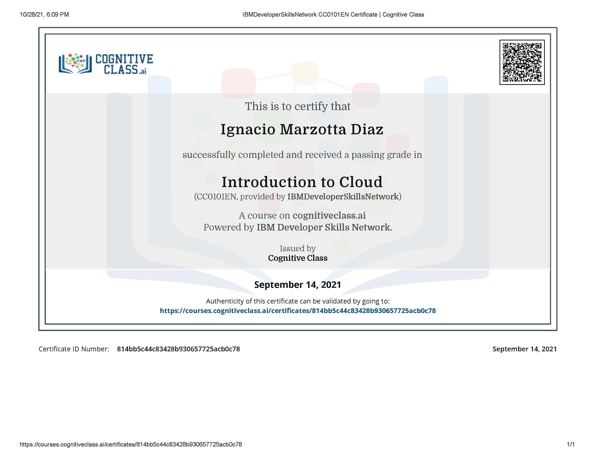
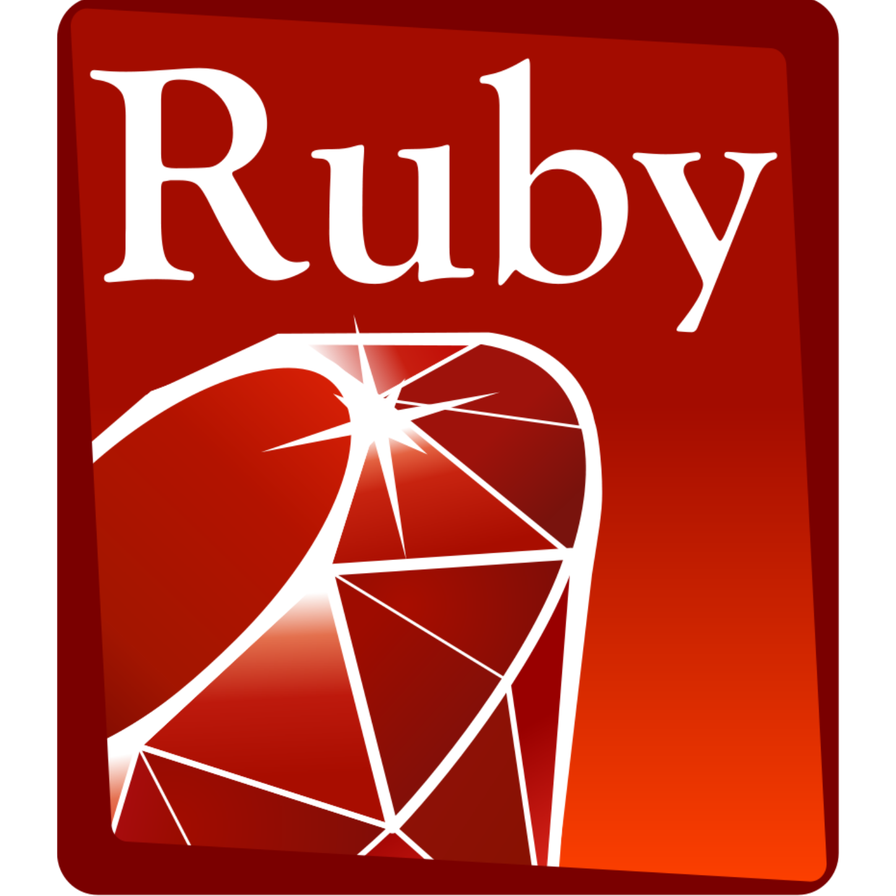

Ignacio
Marzotta
Software developer


Sobre mi
Desde videojuegos hasta programación, siempre me ha apasionado la computación y la tecnología.
Detalles de contacto
Teléfono:
+56 9 7540 7567
Email:
ignaciomarzotta
@gmail.com
Perfil
"Roma no se construyó en un día, y ciertamente no por una sola persona. El futuro lo construímos todos, y hasta el granito de arena más diminuto puede ser la llave del mañana."
Unas palabras sobre mi
Desde que era pequeño, siempre tuve un profundo interés en el campo de la programación y las computadoras. Desde unos inicios probando herramientas como Wix y Construct 2, aprender a programar me ayudó a liberar mi imaginación y poner mis ideas en papel, dándome una nueva forma de ver el mundo y la tecnología.
Filosofía
Soy fiel creedor en la idea de la empatía sin "peros", el concepto de ayudar a otro sin esperar algo a cambio.
Creo que la felicidad y el sentimiento de auto-realizarse viene no solo de ser exitoso, pero de ayudar a los demás a ser felices y cumplir sus metas. Y a veces son las pequeñas acciones las que pueden cambiar a una persona, y realizar algo positivo por alguién más es, en mi opinión, uno de los actos de humanidad más puros.
Mis valores morales que más destaco:
- Disciplina
- Mente abierta
- Honestidad
- Respeto
- Aprender y adaptarse rapidamente
- Creatividad
Intereses & Hobbies
My pasion en la computación y la electrónica siempre jugó un rol fundamental en mis gustos y pasatiempos:
- Videojuegos
- Desarrollo web
- Ciclismo
- Realidad Virtual
- Manga y Anime
Educación Superior
Diplomaturas, licenciaturas, carreras y certificados obtenidos en el area de la programación.
Full-stack Web Development - RubyOnRails

Videogame development - Unity

Tools for Data Management and analysis

Accelerating Deep Learning with GPUs

Introduction to Big Data

Blockchain Essentials

Data Analysis with Python

Data Visualization with Python

Deep Learning Fundamentals

Deep Learning with TensorFlow

Introduction to Hadoop
Introduction to Cloud Computing
Machine Learning with Python
Python for Data Science
Spark Fundamentals
Computación e Informática
Manejo avanzado de C en conceptos tales como generación, ejecución y optimización de algoritmos. Implementación de estructuras de datos como arboles binarios, matrices y listas dinámicas.

Entendimiento avanzado en conceptos como herencia de clases, generación de interfaces, manejo dinámico de archivos, funciones recursivas, Implementación de bibliotecas, manejo de excepciones, etc.

Manejo total de conceptos como el polimorfismo, colecciones, eventos, ensamblados, ejecución asincrónica e interoperabilidad.

Experiencia con conceptos como estructuras de datos integradas, manipulación de archivos, gestión y uso de memoria, metaprogramación, pruebas unitarias, decoradores, etc.

Desde trabajo multihilo, manejo de excepciones, seguridad y sandboxing hasta serialización, conexión a base de datos y API, desarrollo movil, herencia y polimorfismo.

Manejo de caracteristicas como los patrones y matching, queries, unificación, resolución SLD, cuts, recursión, variables anónimas, entre otros.
Web Development
Más de 4 años de experiencia utilizando una mezcla de RubyOnRails desplegado en Amazon Web Services en producción. Desde integración de APIs y desarrollo de sistemas de gestión de pedidos complejos, hasta livestreaming de datos y ciclo completo de mantenimiento de una aplicación en producción.

Manejo de conceptos basicos como JSX, componentes, estado y renderizado condicional hasta conceptos un poco más elevados como Flux y Redux, Testing, Router y orientación a eventos, entre otros.

Sumado a multiples conceptos similares a React; Internacionalización, Directias estructurales, observables, pipes, validación de formularios, etc.

Más de 4 años utilizando varios recursos de AWS en producción, tales como EC2, ElasticBeanstalk, S3 y Route53

Manejo total de las tecnologías Front-end, sea HTML, CSS, JS o Bootstrap.
Videogame Development
Conocimiento avanzado certificado y experiencia con el motor Unity, desde unidades de rendering, conexión a API y scripting hasta herramientas como Cinemachine.

Conocimiento básico de modelado en 3D con Blender.
Others

Conocimiento avanzado de Cisco Packet Tracer y conceptos de networking tales como: DHCP, VLAN, Protocolos de transporte, Modelo P2P, IPv4 & IPv6, Capas de Modelo OSI, Algoritmos de enrutamiento, etc.

Conocimiento general de herramientas del paquete Office, principalmente Word, PowerPoint, Excel, Access y Publisher.

Conocimiento general del entorno Linux y sus características orientado al desarrollo de software.

Manejo de Git para control de versiones y trabajo colaborativo.
2019 - 2022
Cuatro Coigües
Negocio emergente del sur chileno, centrado en la producción y venta de ajo negro "chilote".
Desempeñé el rol de desarrollador principal del sitio oficial de Cuatro Coigües. Creado con responsividad y experiencia de usuario como principales objetivos, el sitio incluye características como:
- Servicio de E-Commerce
- Gestión de pedidos
- Recetario
- Panel de administración
- Sistema de analíticas del sitio
- Internacionalización escalable
- Sistema de suscripción/newsletter
Algunas de las tecnologías utilizadas en el desarrollo y mantenimiento incluyen:
- Ruby On Rails
- Amazon Web Services (AWS)
- Puma
- PostgreSQL
- jQuery
- Webpacker
- i18n Internationalization
- Bootstrap
- API de procesado de pagos Flow
- API de Mailing Mailchimp
A cargo de tareas como: Manager principal del proyecto, Desarrollador Back-End y Front-End, Analista, Gestor DevOps, Supervisor de base de datos, Diseñador de UX/UI (parcialmente) y Quality tester.


2017 - 2019


SALPBYA
Sociedad Argentina de Licenciados en Produccion de Bioimagenes y Afines
Desempeñé el rol de diseñador y desarrollador principal para el sitio y el material promocional de SALPBYA. Creado utilizando Wix, el sitio incluía caracteristicas como calendario dinámico de eventos de radiología con un formulario de registro.


Computación e Informática
Patrón MVC y GUIs (Java)
Segundo proyecto evaluado para la asignatura de paradigmas de programación. Incluye la implementación de Swing y AWT para GUIs y multiples clases anidadas en una aplicación que hace uso del patrón MVC.
Generador de evaluaciones (C++)
Primer proyecto evaluado para la asignatura de paradigmas de programación. Usa la taxonomía de Bloom para generar preguntas con distinto formato, utiliza conceptos como herencia y polimorfismo.
Traductor de código morse (C)
Tercer proyecto evaluado para la asignatura de Algoritmos y Estructuras de datos. Utiliza arboles binarios y listas dinamicas para traducir una cadena de texto a código morse y viceversa.
Gestor de Red de Metro (C)
Segundo proyecto evaluado para la asignatura de Algoritmos y Estructuras de datos. Utiliza grafos, recibe un archivo de texto detallando estaciones de metro y sus conexiones, ofreciendo funciones como utilizar el algoritmo de Djikstra para determinar la ruta mas corta entre 2 estaciones, cortar un tramo de la red y determinar la distancia entre 2 estaciones, además de calcular una ruta alternativa.
DNA Mutation Detector (C)
Primer proyecto evaluado para la asignatura de Algoritmos y Estructuras de datos. Utiliza el concepto de polimorfismo y listas dinámicas para recibir un archivo de texto y, aplicando distintas reglas, determinar si se trata de una secuencia de ADN normal o mutante.
Minesweeper pt.2 (Python)
Segundo proyecto evaluado para la asignatura de Introducción a programación. Utiliza la misma base que la primera versión, pero incluye la función de un canvas dinámico y mostrar los resutados en un archivo de texto.
Minesweeper pt.1 (Python)
Segundo proyecto evaluado para la asignatura de Introducción a programación. Utiliza diversas técnicas de programación para recrear una versión del clásico Buscaminas. Requiere el input del usuario para localizar los objetos del tablero, y utiliza recurrencia para resolver.
Desarrollo web
Cuatro Coigues (RubyOnRails)
Código fuente desactualizado del sitio en producción de Cuatro Coigües. Refiérase a la sección "Experiencia" para más detalles.
MyOwnSpace (RubyOnRails)
Proyecto final para la diplomatura en desarrollo web Full-Stack. Aplicación web que incluyue un calendario dinámico, notas seguras y contraseñas encriptadas en una interfaz front-end responsiva y amigable.
Plataforma ACHS (RubyOnRails)
Aplicación web creada en un límite de tiempo de 24 horas en la Hackathon de Microsoft en Santiago de Chile para la ACHS (Asociación Chilena de Seguridad) en 2019. Consiste de un concepto de red social con funciones de seguridad para trabajadores de areas peligrosas.
Desarrollo de videojuegos
Ultra Cooking Legacy (Unity/C#)
Proyecto final para la asignatura de Tópicos de Especialidad en Informática II. Desarrollado por un equipo de 4 personas, busca entregar una experiencia única e innovadora para el género de plataformas. Incluye caracteristicas como integración de base de datos para creación y almacenado de usuarios, niveles diversos e historia interactiva. Desarrollado para ejecutarse en WebGL en cualquier navegador.
Star Wars: Galaxy Defender (Unity/C#)
Proyecto final para la diplomatura en Desarrollo de Videojuegos con Unity. Consiste de una experiencia 3D del género open-world Space Shooter, hecho con cariño y sin fines de lucro en base a la franquicia Star Wars, con inspiración en títulos como X-Wing Squadron y Star Wars Battlefront. Ofrece características como galería de modelos, habiliades especiales con recarga, distintos modos de cámara, diálogos y misiones.

Tales of a Swordsman (Unity/C#)
Proyecto intermedio para la diplomatura en Desarrollo de Videojuegos con Unity. Es un videojuego 2D del género plataformas, desarrollado en menos de 1 semana para evaluación de conceptos de Unity.
Hot Jump (Unity/C#)
Trabajo de asistencia y programación en el desarrollo del proyecto Hot Jump, desarrollado por 12K Studios. Videojuego del género plataforma simple pero entretenido, con ambiente diverso, tienda integrada y compras deltro de la aplicación, además de una tabla de marcadores en línea.